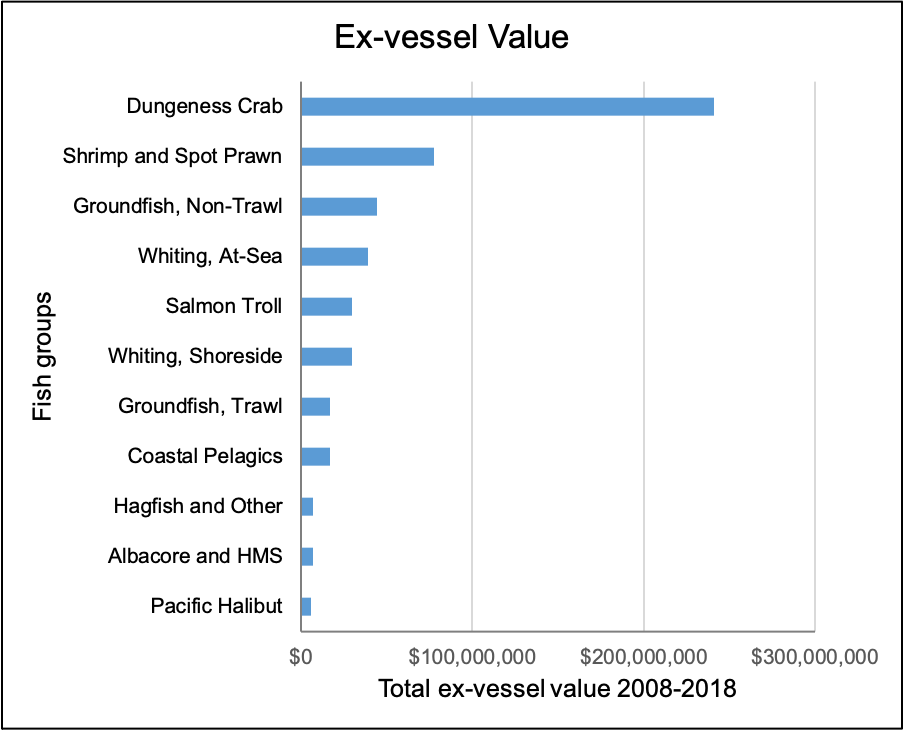
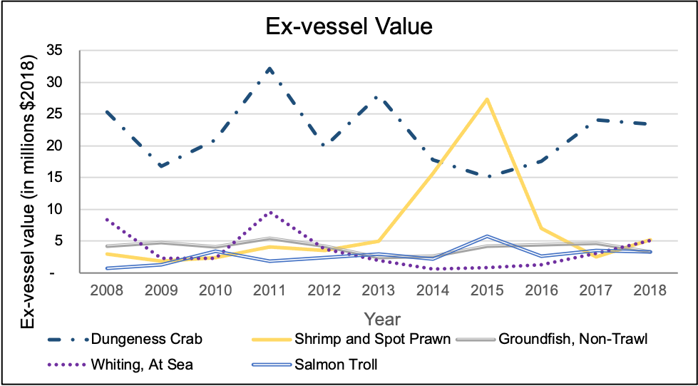
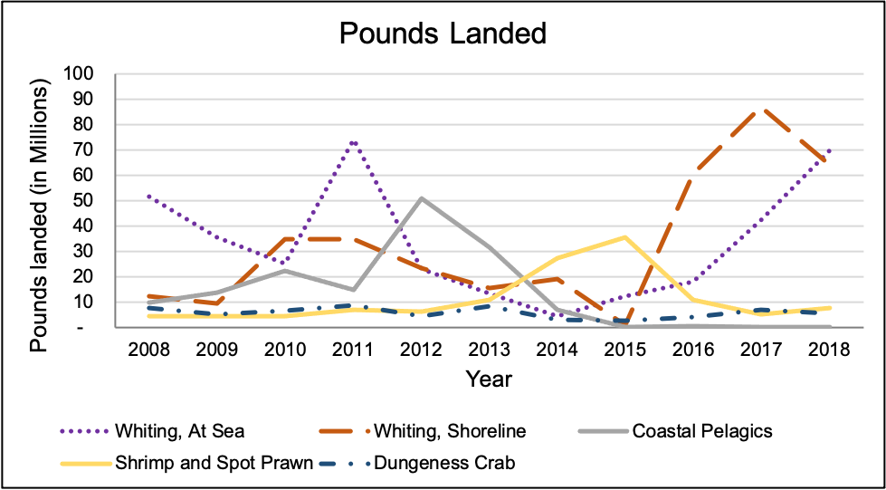
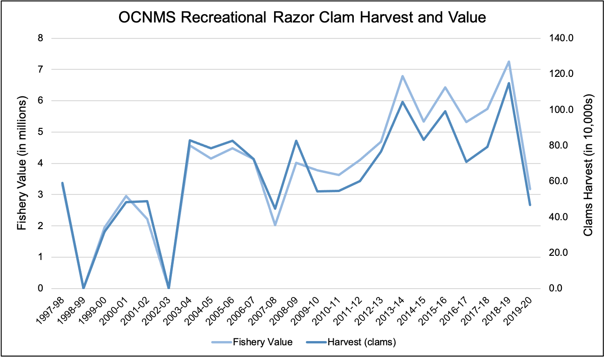

Fishing, personal use
 Reasons fishers reported keeping catch for personal use. Source: Poe, 2019.
Reasons fishers reported keeping catch for personal use. Source: Poe, 2019.
Map - catch reporting areas fish/shellfish
 Washington Department of Fish and Wildlife commercial catch reporting areas for marine fish and shellfish. Source: WDFW
Washington Department of Fish and Wildlife commercial catch reporting areas for marine fish and shellfish. Source: WDFW
Map - catch reporting areas salmon
 Washington Department of Fish and Wildlife commercial catch reporting areas for salmon. Source: WDFW
Washington Department of Fish and Wildlife commercial catch reporting areas for salmon. Source: WDFW
Top 11 species by landings
 Top eleven species categories by pounds landed. (These graphs do not include all fisheries landing data.) Source: WDFW.
Top eleven species categories by pounds landed. (These graphs do not include all fisheries landing data.) Source: WDFW.
Top 11 species by value
 Top eleven species categories by ex-vessel value (2018$). (These graphs do not include all fisheries landing data.) Source: WDFW.
Top 5 species by $
 Top five species categories by ex-vessel value, 2008–2018. (This graph does not include all fisheries landing data.) Source: WDFW.
Top 5 species by weight
 Top five species categories by weight, 2008–2018. (This graph does not include all fisheries landing data.) Source: WDFW.
Trends - Black rockfish retained
Quantity of black rockfish Sebastes melanops kept for charter and private boats in statistical areas 2, 3, 4, and 4B (1998–2016) (see Figure App.ES.CR.8 for map of statistical areas). Source: E. Crust/WDFW, personal communication, December 18, 2020.
Trends - Dungeness crab catch, revenue
 Estimated catch and revenue for Dungeness crab harvested within OCNMS. Source: WDFW, 2020.
Estimated catch and revenue for Dungeness crab harvested within OCNMS. Source: WDFW, 2020.
Trends - Halibut biomass
 Biomass trends for Pacific halibut by management area. Image: IPHC, 2020.
Biomass trends for Pacific halibut by management area. Image: IPHC, 2020.
Trends - Halibut retained
Quantity of Pacific halibut kept for charter and private boats in statistical areas 2, 3, 4, and 4B (1998–2016). Source: E. Crust/WDFW, personal communication, December 18, 2020.
Trends - Lingcod retained
Quantity of lingcod Ophiodon elongatus kept for charter and private boats in statistical areas 2, 3, 4, and 4B (1998–2016) (see Figure App.ES.CR.8 for map of statistical areas). Source: E. Crust/WDFW, personal communication, December 18, 2020.
Trends - Razor Clam harvest and value
 Washington recreational Pacific razor clam harvest and estimated value. Estimates of fishery value are based on Dyson and Huppert (2010). Source: D. Ayres/WDFW, personal communication, August 11, 2020.
Trends - Revenue, salmon troll
 Total annual revenue from each species (management) group harvested by vessels in the salmon troll fleet. For criteria used to identify vessels in the salmon troll fleet, see Richerson and Holland (2017). Image: Richerson & Holland, 2017.
Total annual revenue from each species (management) group harvested by vessels in the salmon troll fleet. For criteria used to identify vessels in the salmon troll fleet, see Richerson and Holland (2017). Image: Richerson & Holland, 2017.
Trends - Salmon retained
Quantity of salmon kept by private and charter boats in statistical areas 2, 3, 4, and 4B (1998–2016). Source: E. Crust/WDFW, personal communication, December 18, 2020.
Trends - Status of goundfish stocks
 Fishing levels (as percent unfished) for overfished and rebuilt West Coast stocks from 1994 to 2019 (POP = Pacific Ocean perch). The shaded area indicates the study period for the 2008–2019 condition report. Source: NOAA Fisheries, 2021a.
Fishing levels (as percent unfished) for overfished and rebuilt West Coast stocks from 1994 to 2019 (POP = Pacific Ocean perch). The shaded area indicates the study period for the 2008–2019 condition report. Source: NOAA Fisheries, 2021a.
Trends - Tuna retained
Quantity of tuna kept for charter and private boats in statistical areas 2, 3, 4, and 4B (1998–2016). Source: E. Crust/WDFW, personal communication, December 18, 2020.
Trends - Vessels, salmon troll fleet
 Number of vessels in the salmon troll fleet that participated in fishing, 2001–2015. For criteria used to identify vessels in the salmon troll fleet, see Richerson and Holland (2017). Image: Richerson & Holland, 2017.
Number of vessels in the salmon troll fleet that participated in fishing, 2001–2015. For criteria used to identify vessels in the salmon troll fleet, see Richerson and Holland (2017). Image: Richerson & Holland, 2017.
Trends - Whiting catch
 Annual catch of Pacific whiting, 2008–2019, for hauls conducted inside (orange, circles) or outside OCNMS waters (blue, squares). Dashed lines show the 2008–2019 trend for each category. Catch in OCNMS did not change during the study period, whereas catch outside OCNMS increased. Haul data were provided in GIS as straight lines using start and end coordinates. A haul was considered to have occurred in OCNMS waters if the line intersected with the OCNMS GIS boundary layer. Source: NWFSC, 2021.
Annual catch of Pacific whiting, 2008–2019, for hauls conducted inside (orange, circles) or outside OCNMS waters (blue, squares). Dashed lines show the 2008–2019 trend for each category. Catch in OCNMS did not change during the study period, whereas catch outside OCNMS increased. Haul data were provided in GIS as straight lines using start and end coordinates. A haul was considered to have occurred in OCNMS waters if the line intersected with the OCNMS GIS boundary layer. Source: NWFSC, 2021.
Trends - Yellowtail rockfish retained
Quantity of yellowtail rockfish kept for charter and private boats in statistical areas 2, 3, 4, and 4B (1998–2016). Source: E. Crust/WDFW, personal communication, December 18, 2020.